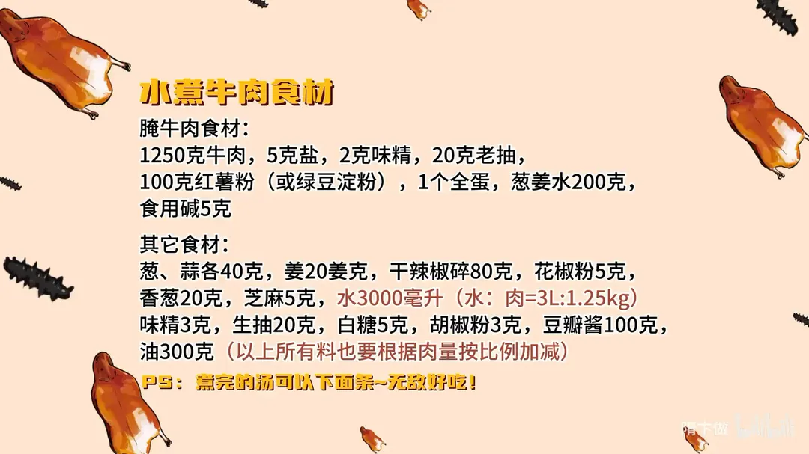
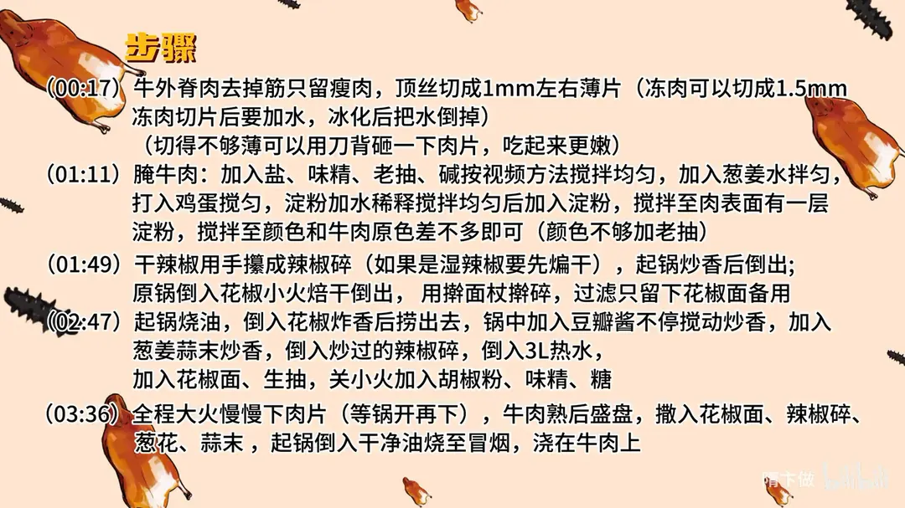

水煮牛肉
隋卞一做。牛外脊 1250g 顶丝切 1mm 薄片，用盐、老抽、5g 食用碱、200g 葱姜水、全蛋和 100g 红薯粉上浆；豆瓣酱与辣椒碎炒香后加 3L 热水汆熟肉片，最后热油泼花椒面、辣椒碎、蒜末。
原视频：https://www.bilibili.com/video/BV1pC411Y7ch
食材
牛肉、红薯粉、豆瓣酱 等 21 样
| 类别 | 用料 | 用量 |
|---|---|---|
| 主料 | 牛肉（牛外脊） | 1250g |
| 腌料 | 盐 | 5g |
| 腌料 | 味精 | 2g |
| 腌料 | 老抽 | 20g |
| 腌料 | 红薯粉（或绿豆淀粉） | 100g |
| 腌料 | 全蛋 | 1 个 |
| 腌料 | 葱姜水 | 200g |
| 腌料 | 食用碱 | 5g |
| 配料 | 葱、蒜 | 各 40g |
| 配料 | 姜 | 20g |
| 配料 | 香葱 | 20g |
| 配料 | 干辣椒碎 | 80g |
| 配料 | 花椒粉 | 5g |
| 配料 | 芝麻 | 5g |
| 调料 | 豆瓣酱 | 100g |
| 调料 | 味精 | 3g |
| 调料 | 生抽 | 20g |
| 调料 | 白糖 | 5g |
| 调料 | 胡椒粉 | 3g |
| 其他 | 水 | 3000ml（水:肉=3L:1.25kg） |
| 其他 | 油 | 300g |
步骤
- 切片：牛外脊肉去掉筋只留瘦肉，顶丝切成 1mm 左右的薄片（冻肉可切 1.5mm，切好后要加水，冰化后把水倒掉）；切得不够薄可以用刀背砸一下肉片，吃起来更嫩。
- 腌牛肉：加入盐、味精、老抽、食用碱按视频方法搅拌均匀，加入葱姜水拌匀，打入鸡蛋搅匀；淀粉加水稀释后倒入，搅拌至肉表面有一层淀粉、颜色和牛肉原色差不多即可（颜色不够可加老抽）。
- 制辣椒碎与花椒面：干辣椒用手攥成辣椒碎（若是湿辣椒要先煸干），起锅炒香后倒出；原锅倒入花椒小火焙干倒出，用擀面杖擀碎，过筛只留下花椒面备用。
- 炒酱烧汤：起锅烧油，倒入花椒炸香后捞出去，锅中加入豆瓣酱不停搅动炒香，加入葱姜蒜末炒香，倒入炒过的辣椒碎，倒入 3L 热水，加入花椒面、生抽，关小火加入胡椒粉、味精、糖。
- 下肉片：全程大火慢慢下入肉片（等锅再开时下），牛肉熟后盛盘，撒入花椒面、辣椒碎、葱花、蒜末。
- 泼油：起锅倒入干净油烧至冒烟，浇在牛肉上即可。
小贴士
- 煮完的汤可以下面条，非常好吃。
- 以上所有用料要根据肉量按比例增减。
讲解要点
难度：★★★★☆（工序多、油量大，难在切薄片、上浆和最后泼油的温度）
为什么这么做
- 选牛外脊、去筋只留瘦肉：外脊筋膜少、肉质紧实，顶丝切才不塞牙，带筋的地方嚼不动。
- 顶丝切 1mm：把肌肉纤维切断，薄片受热快、入口滑；顺着丝切越嚼越柴。
- 放食用碱：碱让肌肉纤维吸水膨胀，是牛肉变嫩的关键；葱姜水既补水，也把碱面那点味道冲掉。
- 全蛋要打匀、红薯粉上浆：蛋液把水锁在肉里，红薯粉糊化后包裹性强、耐煮，肉片在滚汤里才不散。
- 豆瓣酱要不停搅动：豆瓣容易扒锅、容易糊，糊了这一锅汤都发苦。
- 花椒分两次用：炸过花椒的油取香，花椒面最后撒、靠泼油激香，复合味才有层次。
- 泼的油要烧到冒烟：油温不够激不出辣椒、花椒的香，只会把料泡成油渣。
容易翻车
- 全蛋没打匀，肉片下锅就成了蛋花汤。
- 淀粉上得太厚，颜色发白、口感发糊；上到和牛肉原色差不多就行。
- 锅还没开就下肉片，容易粘连、脱浆，要等锅开再慢慢下。
- 豆瓣酱炒糊，整锅汤发苦。
- 油温不到冒烟就泼，辣椒花椒只出油不出香。
热评补充
- 在家做总觉得差点味，多半是料放轻了：这一盆的花椒、辣椒用量能顶家常五六次，香辣才立得住。
原片尾卡


原片文案
AI 字幕校准稿
我原来就提了一嘴，说我做水煮牛肉是绝活，结果后面小李追了我一个月。来吧，水煮牛肉。
我买了一块牛外脊，就是瘦肉多、筋少的地方。先把表面的筋去掉，要牛瘦肉就行。
牛肉要顶丝切：你看这纹路是这个方向，那我们就要这么切，把肉纤维丝切断，这样才好嚼。厚度大约一毫米。修完以后特别大的白筋，揪一下就行。
现在开始腌牛肉。加盐、味精、老抽上色、食用碱，然后按摩，让所有调料在每一片牛肉上都沾满。少加点葱姜水，一是让牛肉更嫩一点，二是把碱面那一点点的味道去掉。再加一个全蛋，一定要打匀，要不然就成蛋花汤了。
里面加淀粉，淀粉先用水稀释一下。上完浆，这个肉的颜色跟牛肉本身的颜色差不多就行了。
然后准备辣椒，直接拿手攥碎，变成辣椒片。干净锅不用加油，把掰好的辣椒碎搁锅里炒一下，炒香了就倒出来。再关小火炒花椒，炒干了倒出来，只要花椒面。
锅里边加入底油，准备点花椒——炸过的花椒的香味跟花椒面的香味多少有点区别，这就是复合味。把炸过的花椒捞出来，加豆瓣酱，你得搅动它，要不很容易扒锅。豆瓣酱炒香了，把蒜、葱还有姜末倒进去，留一点蒜末和葱花，一会还要泼油。炒出香味，把辣椒碎倒进去。
炒香了加水、花椒面、生抽；关小火，加胡椒粉、味精、糖。
全程大火，慢慢下肉片，等那锅慢慢开；不开就稍微等一下。牛肉熟了盛盘，上面撒花椒面、辣椒碎、葱花、蒜末。锅里边加入干净油，烧到六七成热，表面冒了烟再往上浇。
牛肉的口感非常好，又软。第一感觉就是麻辣，然后底料全部都上来了，但这三种味道也盖不住牛肉本身的香味。吃得太爽了，谁的一生不得吃一次没有配菜的水煮牛肉。